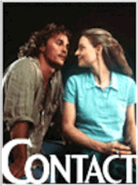
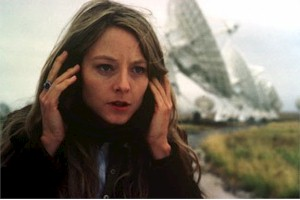
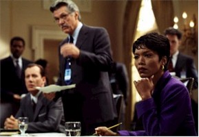
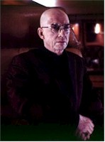
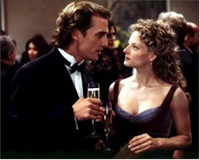

|
|
|
| Movie Credits | Buy It! |
Contact
Review by Carrie
Gorringe
Posted 11 July 1997
|  | Directed by Robert Zemeckis Starring Jodie Foster, Matthew
McConaughey, Screenplay by James V. Hart |
On the issue of extraterrestrial exploration, I have to admit that the subject leaves me, not with a sense of indifference, but rather with a sense of extreme bemusement. While news reports proclaim, almost breathlessly, that over 100 million people have visited the Mars Pathfinder website established by the National Aeronautics and Space Administration, there is a temptation to ask just what it is about space walks by lunar modules that inspires the sort of adulation usually reserved for more earth-bound stars. Is it mere human wanderlust? The promise of greater scientific discoveries? A metaphorical throwback to the great space exploration of the 1960s, when such explorations were equated with American military and economic power? An attempt to avoid more intractable social problems by concentrating upon scientific problems that, in their empirical realm, appear to be more amenable to a solution, however eventual the progress? The last two questions don’t necessarily have to be fuelled by anti-government suspicion to render them legitimate points of inquiry, but anyone attempting to analyze what can almost be referred to as an obsession with exploring the great galactic beyond might do well to include them as part of his or her inquisitive repertoire.
One might have expected this sort of questioning from America’s premier, or at least most notable, astronomer, the late Carl Sagan, but, after reading Sagan’s 1985 bestseller, Contact, I was inspired to ask three questions: is there intelligent life out in the great intergalactic beyond, is Mars really that cold, and what, in the name of Venus, was this book doing on the fictional bestseller list? It may be heresy to describe Sagan, who went to the great observatory in the sky last December after a long illness, as no writer of fiction, however redoubtable his gifts as a masterful synthesizer of science for the uninitiated (as his book, Cosmos, made quite evident); Sagan’s strikingly original vision of searching for extraterrestrial life, however, was marred by considerable forays into the mire of hokey melodrama and a dubious gift for the cultural tautology which was utterly stunning for a Ph.D. On the latter front I offer up as evidence one early chapter, concerning the heroine’s upbringing, that includes several paragraphs relating, with all of the earnestness of an acolyte, the discovery of contradictory and – yes! – even hypocritical passages in the Bible; this is a declaration somewhat akin to the observation that the air on Earth contains oxygen. To call some of the prose and concepts in Contact leaden is to miss the sound of hearing the more insufferable parts already crashing through successive floors on their way to a resounding boom at their final destination. Sagan’s intent, no doubt, was to fuse popular narrative with scientific information, to become something of a scientific John Steinbeck for the 1980s; instead, he came across as being more like astronomy’s answer to Judith Krantz. Contact would have been a mere blip on the bestselling radar screen had it not been for Sagan’s towering reputation.
Sagan’s book was replete with agnostic undertones which often flared into an anti-religious diatribe. While Sagan’s comments on the dangerous and irrational behavior of that oxymoron known as the religious right are not without considerable merit, the strident and unthinking satire to which Sagan’s book subjects this religious subsection tends toward an implication that faith and scientific progress are somehow mutually exclusive (Sagan seemed to be immune to the realization of how much his heroine’s intergalactic quest bears a remarkable resemblance to the patterns of a religious crusade, especially in regard to the aesthetic and fanatical devotion to her mission and her desperate need to persuade others of the rectitude of her goal); the two worlds need not exist in antagonistic tandem, or perhaps Sagan realized the affinities between them too late and hoped that readers would not make that most uncomfortable of associations.
Stripped of all its superfluous elements, Contact involves its audience in the life of an astronomer, Ellie Arroway (Foster), who, since childhood, has been obsessed with finding other life out beyond the earth, a search encouraged by her late father (Morse), who died when Ellie was ten. Ever since, this dual-pronged obsession – scientific research coupled with a barely-latent desire to communicate once again with her father – has driven her life. When the government, under the auspices of her old rival, David Drumlin (Skerritt) takes away her funding, she enlists the help of billionaire S. R. Hadden (Hurt), whose eccentric and secretive demeanor reveals him to be the result of a failed attempt to combine the DNA of Howard Hughes and Bill Gates, to fund her research. One night, in the New Mexico desert, Ellie gets the call to compliment her calling, and brings herself right into conflict with the U.S. Government, which reasons that, since Ellie’s organization rents telescope time from it, the discovery can be commandeered under the guise of national security concerns. She then must work against not only Drumlin, but also National Security Adviser Michael Kitz (Woods), a creepy paranoiac who seems happy to have found a new replacement for his old Cold War scapegoats and Rachel Constantine (Bassett), a presidential adviser of high rank who doesn’t really share Ellie’s apparently manic sympathies. Ellie must also fight against Richard Rank (Lowe, in a brilliantly sly performance and inspired bit of casting), a whacko fundamentalist leader who sees something ungodly in her ambitions. Ellie does, however, have two people in her corner: Dr. Kent Clarke (Fichtner), Ellie’s longtime supporter and co-star-gazer, and Palmer Joss (McConaughey), her former lover, now an influential author who acts as a bridge between Ellie and the extremists of all stripes surrounding her. As progress is made on the message sent by the alien powers and it is discovered that it contains blueprints for a transport device, all participants gear up for the fight to see who will be the first to use it. The fighting for position and for self-discovery has the potential for scientific and personal advancement, as well as tragedy, on a grand scale.
Admittedly, there were some promising elements of note in Sagan’s novel, most notably Sagan’s long speculative dissertations on what extraterrestrial life might be like and how we might go about the messy business of finding and communicating with it. These aspects of the novel – the very best parts that displayed Sagan’s enormous intellectual and imaginative talents to their fullest – might have been transformed into a fascinating film, with the formulaic plot and characters serving as interesting vehicles for the transmission of said ideas into mainstream entertainment. Unfortunately, the task of so doing was handed to Robert Zemeckis, a director with a penchant and a genuine gift for fantasy (Who Framed Roger Rabbit? and the Back to the Future series), but one whose grasp of history tends, at best, to be informed by the same sort of fantastic mindset (the best example of this is his last film, Forrest Gump, that Oscar-winning piece of cynical, feel-good sludge, in which he managed to persuade a great number of baby-boomers of their essential goodness and naivete during the 1960s; they had done nothing to precipitate social upheaval; it had just happened to them, just like it had to the mentally-challenged and good-natured Forrest). Given the limits of his directing parameters, it isn’t at all surprising that Zemeckis was having difficulties with adapting Contact for the big screen, a problem he alluded to in an interview. As Zemeckis saw it, Contact "spans years and countries, vast distances with hundreds of characters" and "the biggest challenge to me was to condense all of that [material] into a clear and compelling story." Clear the film may indeed be, but compelling it is not, as the film succeeds in achieving only half of Zemeckis’ stated goal.
To their credit, Zemeckis and screenwriters Hart and Goldenberg do succeed in fashioning a clear-cut narrative from all of Sagan’s flashbacks, but their idea of streamlining has more to do with thoughtless clear-cutting than with a skillful paring away of material. Valuable background material from the novel, especially that pertaining to the development of the antagonism between Ellie and Drumlin, is given a perfunctory heave-ho; with it went any hope of understanding the depths of their mutual distrust. What little that remains of Sagan’s original vision is purely coincidental and has a deleterious effect upon the characters who have to carry their one-dimensional psychological profiles into an equally truncated plot. Ellie Arroway becomes nothing more than earnestness personified: any inner conflict her character might possess has been boiled down to its essentials and reboiled again for bad measure; the subtle complexities of Ellie’s ambition have been drowned in the old love-versus-career chestnut as she fights that old feeling between her and Palmer. Other characters suffer the same undermining of structure; Drumlin is reduced to nothing more than an academic Sammy Glick, all scheming ambition and limply sarcastic comments (in the first encounter between Arroway and Drumlin, he asks her, sotto voce, if E.T. has phoned home yet). Kitz spouts a paranoiac stream-of-consciousness babble appropriate to a Cold War bureaucrat, or someone who has seen It Came From Mars one too many times. Only Hurt’s whacky and sardonic rendition of Hadden manages to stand out among the other dimmed stars.
Zemeckis may have robbed us of characterization, but he tries to make up for his sins of omission by substituting lots of cinematic razzle-dazzle. He brings back the computer-improved footage from Gump for one more go-around, and, as before, uses it just as unconvincingly. We aren’t treated to Forrest’s confession to the ruler of the free world of the need to avail himself of the White House’s facilities, but we are allowed to have President Billy providing his "analysis" of the alien missive, not to mention the contributions of what seems like everyone from CNN (Bernard Shaw and Wolf Blitzer throw in their two cents’ worth, for what it’s worth). This sleight-of-multiple screens is supposed to convey an air of legitimacy, and accuracy to the enterprise under, as it was supposed to in Gump, but rather just serves to jar the viewer out of the illusion. In their desperation to keep the film’s bloated narrative flowing (the film’s running time is over two hours and twenty minutes and it seems at once to be too long and incomplete at that length), screenwriters Hart and Goldenberg not only manage to make the film seem even more formulaic than the novel, but they also seize upon news footage as a way to get all of the information to the audience; in the process, they interrupt the film’s flow, and detract from a story that contained more than enough interest without their vain attempts to tart it up (most notably in the opening quasi-credit sequence, which moves with the speed and knowing intent of Mae West descending a staircase to a crowd of admirers, and elicits more than a few guffaws in the audience for its laughably languorous efforts). The entire enterprise reminds us of a line first uttered by Ellie’s father (and, in true Irving Thalberg tradition, repeated twice more over the course of the film), "If it is just us [out there], it seems like an awful waste of space."
Contents | Features | Reviews | News | Archives | Store
Copyright © 1999 by Nitrate Productions, Inc. All Rights Reserved.